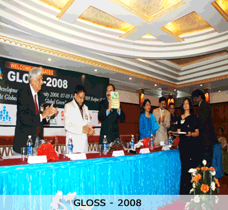

International Events
(1) FIRST GLOBAL SUMMIT ON SUSTAINABLE DEVELOPMENT AND BIODIVERSITY 2008 (GLOSS 2008), February 7-9th,2009 Raipur, Chhattisgarh.
CTRD took a lead role as co-partner agency in organizing above International Conference at Raipur with VRM Foundation and other agencies. The Global Summit brought together academicians, senior executives from corporate sectors, media persons and policy makers to streamline global agenda on Climate Change. The Summit endorsed a wide range of declaration. The Scientists participated in Global Summit on Sustainable Development and Biodiversity strongly recalled the mandate of the Rio Declaration on Environment and Development, the Nairobi Declaration on the role and mandate of the United Nations Environment Programme and the Plan of Implementation of the World Summit on Sustainable Development (“Johannesburg Plan of Implementation”). The deliberations of this Global Summit have provided opportunities to examine various mechanisms, institutional innovation and reforms relating to environment governance in tropical regions of South Asia. There is an urgent need to involve Government, Development actors and corporate players in reshaping and revitalizing the institutions with overarching environmentally related mandates and rationalizing the process of Sustainable Development and eliminating unsustainable development process from the main stream. The Global Summit has critically examined the interventions initiated at different sectors for reformation of environment governance through multiple policy making processes. Unfortunately, it has been recognized that these processes have failed to generate the mandate in achieving a visible land mark.

(2) FIRST INTERNATIONAL CONFERENCE ON CONSERVATION, MARKETING AND PATENTING OF MEDICINAL PLANTS (ICCMP) was hosted by Council for Tribal and Rural Development (CTRD) during 14-15th March 2010 at Raipur, Chhattisgarh.
This legendary event of the world was attended by 140 scientists from Asia, Europe, Africa and different regions of India. The Conference addressed a wide range of issue relating to implementation of Global Strategy for Plant Conservation (GSPC) at national and regional level recommended in the Global Convention on Biological Diversity (CBD) 2002, assessing the replicability of promising practices on indigenous mechanism of Sustainable Management of Medicinal Plants, promoting arrangements for registration of patent rights and linking livelihood opportunities with conservation and marketing of medicinal plants, reinforcing the cooperation and communication among officials responsible for overseeing the production and marketing of products made from medicinal plants and the introduction of new ones. The National Medicinal Plants Board, Government of India, Chhattisgarh State Medicinal Plants Board and different corporate house extended their support in hosting this International event most graciously at Raipur along with the programmes of National event “AROGYA 2010” .